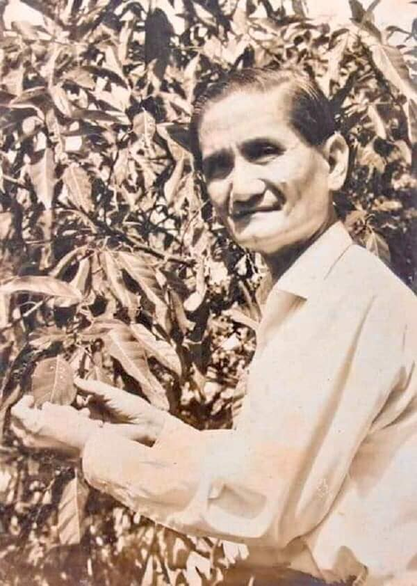
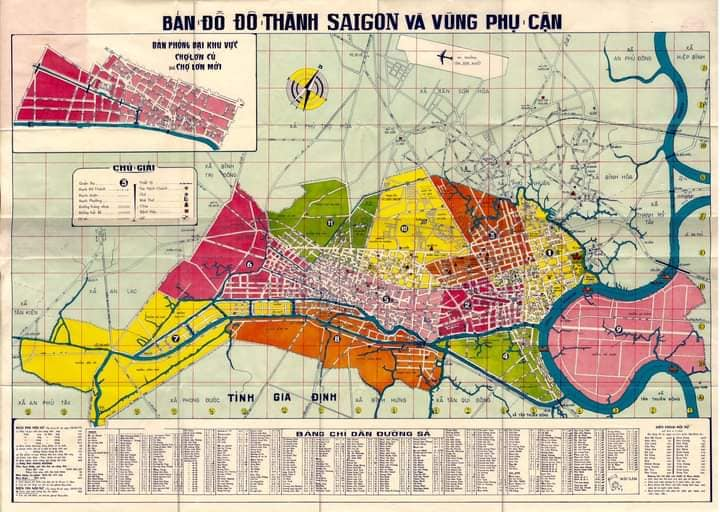

Sau hiệp định Genève tháng 7 năm 1954 chính quyền Pháp bàn giao cho Chính Phủ Bảo Đại, với Thủ Tướng Ngô Đình Diệm.
Để đánh dấu việc giành độc lập từ tay người Pháp, Toà Đô Chánh Sài Gòn được lệnh gấp rút thay thế toàn bộ tên đường từ tên Pháp qua tên Việt trong khoảng thời gian ngắn nhất.
Việc đối chiếu tên các danh nhân trong lịch sử 4000 năm để đặt tên đường sao cho hợp lý không phải dễ. Chỉ nghĩ đơn thuần, khi dùng tên Vua “Trần Nhân Tôn” và Tướng “Trần Hưng Đạo”, người làm dưới trướng của Vua, để đặt tên cho 2 con đường thì đường nào to và quan trọng hơn? Câu hỏi nhỏ như vậy còn thấy không đơn giản, huống chi cân nhắc cho ngần ấy con đường trong một thời gian gấp rút thật không dễ.
Lúc bấy giờ công việc này được giao cho Ty Kỹ Thuật mà Phòng Hoạ Đồ là phần thực hành trực tiếp. May mắn thay cho thành phố có được nhà văn Ngô Văn Phát, bút hiệu Thuần Phong, có bằng Cán Sự Điền Điạ lúc ấy đang giữ chức Trưởng Phòng Hoạ Đồ.
Năm 1956, sau hơn ba tháng nghiên cứu, ông đã đệ trình lên Hội Đồng Đô Thành, và toàn bộ danh sách tên đường ấy đã được chấp thuận.
Nhìn những tên đường trên họa đồ, khu nào thuộc trung tâm thành phố, khu nào thuộc ngoại ô, đường nào tên gì và vị trí gắn bó với nhau, càng suy nghĩ càng hiểu được sự uyên bác về lịch sử và cái dụng ý sâu xa của tác giả.
Các đường được đặt tên với sự suy nghĩ rất lớp lang mạch lạc, với sự cân nhắc đánh giá bao gồm cả công trạng từng anh hùng một, lại phù hợp với địa thế, và các dinh thự đã có sẵn từ trước. Tác giả đã cố gắng đem cái nhìn vừa tổng quát lại vừa chi tiết, những khía cạnh vừa tình vừa lý, đôi khi chen lẫn tính hài hước, vào việc đặt tên hiếm có này.
Đầu tiên là những con đường mang những lý tưởng cao đẹp mà toàn dân hằng ao ước: Tự Do, Công Lý, Dân Chủ, Cộng Hoà, Thống Nhất. Những con đường hoặc công trường này đã nằm ở những vị trí thích hợp nhất.
Đường đi ngang qua Bộ Y Tế thì có tên nào xứng hơn là Hồng Thập Tự.
Đường De Lattre De Tassigny chạy từ phi trường Tân Sơn Nhất đến bến Chương Dương đã được đổi tên là Công Lý, phải chăng vì đi ngang qua Pháp Đình Sài Gòn. Con đường dài và đẹp rất xứng đáng. Ba đường Tự Do, Công Lý và Thống Nhất giao kết với nhau nằm sát bên nhau, bên cạnh dinh Độc Lập.
Đại Lộ Nguyễn Huệ nằm giữa trung tâm Sài Gòn nối từ Toà Đô Chánh đến bến Bạch Đằng rất xứng đáng cho vị anh hùng đã dùng chiến thuật thần tốc phá tan hơn 20 vạn quân Thanh. Đại Lộ này cũng ngắn tương xứng với cuộc đời ngắn ngủi của ngài.
Những danh nhân có liên hệ với nhau thường được xếp gần nhau như Đại Lộ Nguyễn Thái Học với đường Cô Giang và đường Cô Bắc, cả ba là lãnh tụ cuộc khởi nghĩa Yên Bái.
Hoặc đường Phan Thanh Giản với đường Phan Liêm và đường Phan Ngữ. Phan Liêm và Phan Ngữ là con, đã tiếp tục sự nghiệp chống Pháp sau khi Phan Thanh Giản tuẫn tiết.
Những đại lộ dài nhất được đặt tên cho các anh hùng Trần Hưng Đạo, Trần Quốc Toản, Lê Lợi và Hai Bà Trưng. Mỗi đường rộng và dài tương xứng với công dựng nước giữ nước của các ngài.
Đường mang tên Lê Lai, người chịu chết thay cho Lê Lợi thì nhỏ và ngắn hơn nằm cận kề với đại lộ Lê Lợi.
Đường Khổng Tử và Trang Tử trong Chợ Lớn với đa số cư dân là người Hoa.
Bờ sông Sài Gòn được chia ra ba đoạn, đặt cho các tên Bến Bạch Đằng, Bến Chương Dương, và Bến Hàm Tử, ghi nhớ những trận thuỷ chiến lẫy lừng trong lịch sử chống quân Mông Cổ, chống Nhà Nguyên của Hưng Đạo Đại Vương vào thế kỷ 13.
Đường Nguyễn Du: con đường vừa dài vừa có nhiều biệt thự đẹp, với hai hàng cây rợp bóng quanh năm, lại đi ngang qua công viên đẹp nhất Sài Gòn, vườn Bờ Rô, và đi ngang qua Dinh Độc Lập, thì quá xứng đáng. Không có đường nào thích hợp hơn. Tuyệt! Vườn Bờ Rô cũng được đổi tên thành Vườn Tao Đàn làm cho đường Nguyễn Du càng thêm cao sang.
Vua Lê Thánh Tôn, người lập ra Tao Đàn Nhị Thập Bát Tú, cũng cho mang tên một con đường ở địa thế rất quan trọng, đi ngang qua một công viên góc đường Tự Do, và đi trước mặt Toà Đô Chánh.
Trường nữ Trung Học Gia Long lớn nhất Sài Gòn thì, (trớ trêu thay?), lại mang tên ông vua sáng lập nhà Nguyễn. Trường nữ mà lại mang tên nam giới!
Có lẽ nhà văn Thuần Phong muốn làm một chút gì cho trường nữ Trung Học công lập lớn nhất thủ đô có thêm nữ tính, nên đã đặt tên hai đường song song nhau cặp kè hai bên trường bằng tên của hai nữ sĩ: Bà Huyện Thanh Quan và Đoàn Thị Điểm. Chùa Xá Lợi nằm trên đường Bà Huyện Thanh Quan thấy cũng nhẹ nhàng.
Đường Gia Long và đối thủ không đội trời chung của ông là Nguyễn Huệ có sự nghiệp thể hiện qua tên đường. Đường Gia Long tuy hẹp nhưng dài, đường Nguyễn Huệ tuy to, nhưng ngắn, như số phận của vị anh hùng dân tộc đánh đông dẹp bắc, công tích rực rỡ mà tuổi thọ ngắn ngủi.
Ở phía đầu đường Gia Long là nhóm những vị khai quốc công thần của ông, đó là đường Lê Văn Duyệt, đường Võ Tánh, Ngô Tùng Châu, quân sư Đặng Đức Siêu.
Một số cái tinh tế khác như đường Lê Lai nhỏ nằm cạnh đường Lê Lợi lớn, đường Sư Vạn Hạnh âm thầm nối gót cho đường Lý Thái Tổ, giúp Lý Công Uẩn lập ra nhà Lý.
Khu vực người Hoa chợ Lớn thì rặt các con đường của những vị hiền triết của Trung Hoa như Trang Tử, Khổng Tử, hay các vị người Hoa đã có công mở cõi như Mạc Cửu, Mạc Thiên Tích….
Còn ở Quận 1 ta thấy Nguyễn Trung Trực, Thủ Khoa Huân, Trương Công Định…các vị khởi nghĩa chống Pháp thì sát sạt nhau.
Các vị nữ sĩ Bà Huyện Thanh Quan, Đoàn Thị Điểm, Hồ Xuân Hương khéo làm sao cũng ở bên nhau. Cách đó một khúc lại là cụm Bùi Thị Xuân, Huyền Trân Công Chúa và Sương Nguyệt Anh. Trong khi những vị Trạng nguyên như Lê Quý Đôn, Phùng Khắc Khoan, Lê Văn Hưu, Mạc Đĩnh Chi là các con đường song song bàn cờ.
Hai danh nhân góp phần xây dựng nên chữ Nôm và Quốc Ngữ là Hàn Thuyên và Alexandre de Rhodes thì lại song song nhau bên cạnh.
Thẳng góc với hai đường Bà Huyện Thanh Quan và Đoàn Thị Điểm là đường Hồ Xuân Hương. Ba nữ sĩ nằm bên cạnh nhau, thật là có lý.
Chúa Hiền Vương Nguyễn Phúc Tần, là người đã có công rất lớn trong công cuộc Nam Tiến của dân tộc Việt Nam. Đặc biệt là Chúa Hiền Vương đã đóng góp rất nhiều công sức trong việc bình định và chinh phục vùng đất Gia Định ngày xưa. Gia định ngày xưa bao gồm Biên Hòa, Long Khánh, Bà Rịa, Vũng Tàu, Tây Ninh, Phước Long, Bình Long, Long An, Mỹ Tho, Gia Định, Sài Gòn… bây giờ. Cho nên tên của Ngài được đặt cho một trong hai con đường chính từ hướng Bắc dẫn vào trung tâm Thành Phố Sài Gòn.
Hai vị trung thần nhà Nguyễn là Lê Văn Duyệt và Trương Minh Giảng đã mở mang bờ cõi nước ta tới tận biên giới Thái Lan bây giờ, đã thiết lập thêm một Trấn mới là Trấn Tây Thành, (hai Trấn kia là Trấn Bắc Thành và Trấn Gia Định Thành). Phải chăng chính vì vậy mà ngay từ khi vừa giành được chủ quyền từ tay thực dân Pháp, hai con đường lớn từ trung tâm Sài Gòn hướng về Bà Quẹo để sang thẳng đất Miên qua ngả Gò Dầu, đã được mang tên hai vị Anh Hùng Tây Tiến nổi danh này. Đó là đường Trương Minh Giảng và đường Lê Văn Duyệt.
✍️ Tiểu sử nhà văn Ngô Văn Phát:

Nhà văn, nhà họa đồ Ngô Văn Phát, bút hiệu Thuần Phong, Tố Phang, Đồ Mơ, sinh ngày 16-10-1910 tại huyện Vĩnh Lợi, tỉnh Bạc Liêu.
Thuở nhỏ ông học ở Bạc Liêu, Sài Gòn, đậu bằng Thành Chung rồi nhập ngạch họa đồ ngành công chánh. Ông ham thích văn chương từ ngày còn ngồi trên ghế nhà trường, từng có thơ đăng trên Phụ Nữ Tân Văn, họa mười hai bài Thập Thủ Liên Hoàn của Thương Tân Thị… Có lúc ông dạy Việt Văn tại trường Pétrus ký Sài Gòn.
Năm 1957 ông có bài đăng trên bộ Tự điển Encyclopedia – Britannica ở Luân Đôn (Anh Quốc). Đó là chuyên đề Khảo cứu về thành phố Sài Gòn.
Năm 1964 chuyên đề Ca dao giảng luận in trên tạp chí Trường Viễn đông Bác cổ ở Paris (sau in thành sách ở Sài Gòn). Cùng năm này Trường Cao học Sorbonne (Paris), ông cũng có chuyên đề Nguyễn Du et la métrique populaire (Nguyễn Du với thể dân ca) trong bộ sách nhan đề: Mélanges sur Nguyen Du (Tạp luận về Nguyễn Du).
Những năm 70 ông được mời giảng môn Văn học dân gian tại Đại học Văn khoa, Sư phạm Huế và Cần Thơ.
Ông mất trong năm 1983 tại Sài Gòn.

.